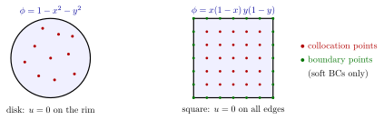
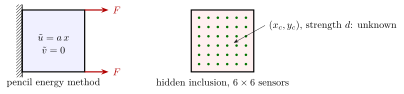

Lecture C
PINNs in Two Dimensions
Builds on Lectures A and B (with Supplement S1), and on Lecture 4.
C.1 What changes in two dimensions — and what does not
Lecture 4 took the finite element method from the line to the plane and found that not one concept had to be added — only indices. We now make the same trip with the physics-informed networks of Lecture B, and the first thing to report is the same: the loss anatomy of Lecture B survives untouched. Ansatz, residual at collocation points, boundary terms by construction or by persuasion, optional data term, training. What changes is bookkeeping, plus one matter of substance that we have been promising since the 1D examples of Supplement S1:
Points fill an area, and the boundary is a curve. Collocation points are scattered over a region; boundary conditions hold along a line, so the boundary needs points of its own.
Derivatives become partial. The residual contains \(\partial^2/\partial x^2\) and \(\partial^2/\partial y^2\); the chain rule still differentiates the network exactly.
Hard boundary conditions need a multiplier that vanishes on a curve, not at a point. Easy for a disk or a square; real work for a bracket with holes.
Unknowns may be vectors: elasticity asks for two fields, \(u\) and \(v\) — one network, two outputs.
The shortcut dies. In the 1D bar of Supplement S1 every inverse problem could be checked by statics, because the bar was statically determinate. In the plane the internal fields depend on the unknown material distribution, no closed form exists, and the joint training of field and parameters stops being a rehearsal. This is the lecture where the method is finally asked to do something we cannot do by hand.
The house rule holds: every idea first at pencil scale.
C.2 A second physics for the plane: heat in a plate
Lecture 4 treated one 2D physics, elasticity. For a first PINN a scalar field is kinder, so we add the two-dimensional twin of Exercise 2 — by the usual three steps, in three lines. Temperature \(T(x,y)\); its gradient \(\mathbf{g} = \nabla T\) (kinematics); Fourier’s law \(\mathbf{q} = -\lambda\,\mathbf{g}\) (material); heat balance of a small rectangle, \(\frac{\partial q_x}{\partial x} + \frac{\partial q_y}{\partial y} = s\) (balance). Chained, for constant \(\lambda\): \[-\lambda\,\Delta T = s \quad\text{in } \Omega, \qquad \Delta T = \frac{\partial ^2T}{\partial x^2} + \frac{\partial ^2T}{\partial y^2}, \tag{C.1}\] with temperature prescribed on the boundary (essential) or heat flux prescribed (natural). This is the second row of the table that closed Lecture 4, and the same equation describes a pressurized membrane and the torsion of a shaft. We write \(u\) for the unknown and set \(\lambda = 1\).
C.3 Example 1: a one-parameter PINN on a disk
A heated disk with a cooled rim: \(-\Delta u = 4\) inside the unit circle, \(u = 0\) on it. Exact solution: \(u = 1 - x^2 - y^2\) (check: each second derivative is \(-2\)).
For the ansatz we need a family that vanishes on the whole rim, whatever its parameter. The function \(1 - x^2 - y^2\) is zero exactly on the unit circle and positive inside — a distance-like function of the boundary. Multiply it by anything and the boundary condition is hard: \[\tilde u(x,y;\,a) = a\,(1 - x^2 - y^2).\] The residual: \(\Delta\tilde u + 4 = -4a + 4\), the same at every point, so whatever collocation points we scatter over the disk (Fig. C.1, left), \[J(a) = 16\,(1-a)^2, \qquad J'(a) = -32\,(1-a),\] and gradient descent with \(\eta = \tfrac1{64}\) from \(a^0 = 0\) gives \(a^{k+1} = a^k + \tfrac12(1 - a^k)\): \[a^k:\quad 0,\ \tfrac12,\ \tfrac34,\ \tfrac78,\ \tfrac{15}{16},\ \dots \;\to\; 1 .\] The very table of the 1D pencil PINN (Supplement S1, Section S1.2.1), halving the error each step, converging to the exact solution. Two dimensions changed the Laplacian and nothing else.
Key idea
Hard boundary conditions in 2D: write \(\tilde u = \bar u + \phi\cdot(\text{free part})\) with a function \(\phi\) that is zero on the essential boundary and nonzero inside. In 1D \(\phi\) was \(x\), or \(x(L-x)\); in 2D it is \(1 - x^2 - y^2\) for the disk, \(x(1-x)\,y(1-y)\) for the unit square. Finding \(\phi\) for a complicated shape is the 2D price of “by construction” — and the reason penalties are popular (Section C.6).

C.4 Example 2: when the truth is not in the family
The disk was kind: its exact solution lay inside the one-parameter family. Change the domain to the unit square — \(-\Delta u = 1\), \(u=0\) on all four edges — and that luck ends. The exact solution is an infinite series; its value at the center is \(u(\tfrac12,\tfrac12) = 0.0737\). Take the natural one-parameter ansatz \[\tilde u = a\,\phi, \qquad \phi = x(1-x)\,y(1-y), \qquad R(x,y) = 1 - 2a\,\bigl[x(1-x) + y(1-y)\bigr],\] and the residual now varies over the square: it cannot be made zero everywhere. So we are back at the question of Lecture 2 — in what sense small? — and can replay all three answers by hand, because every integral is a product of 1D polynomial integrals:
| method | condition | \(a\) | \(\tilde u(\tfrac12,\tfrac12)\) (exact: 0.0737) |
|---|---|---|---|
| collocation at the center | \(R(\tfrac12,\tfrac12)=0\) | \(1\) | \(0.0625\) (\(-15\,\%\)) |
| least squares | \(\min\iint R^2\) | \(\tfrac{15}{11}\) | \(0.0852\) (\(+16\,\%\)) |
| Galerkin (weak form) | \(\iint \nabla\phi\cdot\nabla\tilde u = \iint \phi\) | \(\tfrac54\) | \(0.0781\) (\(+6\,\%\)) |
(For Galerkin: \(\iint|\nabla\phi|^2 = \tfrac1{45}\) and \(\iint\phi = \tfrac1{36}\), hence \(a = \tfrac{45}{36}\).) Three sensible methods, three different answers, none exact. In Lecture 2 (Example 2, Section 2.6) the three happened to agree for the one-parameter ansatz, with collocation at the midpoint; in the plane they part company. Galerkin comes closest here, which fits its pedigree: within the family it is the best approximation in the sense of the energy. The table also says what a strong-form PINN is in this company: it is the least-squares row, with the single function \(\phi\) replaced by \(\phi\) times a network, and the integral by a sum over points.
C.5 Example 3: a 2D PINN with a network
Replace the lone parameter by a network with two inputs, \[\tilde u(x,y) = \phi(x,y)\cdot g(x,y;\mathbf{w}), \qquad g = \sum_{j=1}^{H} c_j\tanh(w_j x + v_j y + b_j) + c_0 .\] Each hidden unit is now a smooth ridge — a step across some direction in the plane, with trainable orientation \((w_j, v_j)\), position and steepness. The Laplacian of the product follows from the product rule, \[\Delta(\phi g) = g\,\Delta\phi + 2\,\nabla\phi\cdot\nabla g + \phi\,\Delta g,\] every piece an explicit formula; this is the bookkeeping that automatic differentiation performs silently in real frameworks. The loss is the mean of \((\Delta\tilde u + 1)^2\) over a \(15\times15\) grid of collocation points. Trained with Adam, the refined gradient descent met in Lecture A (\(H = 10\) units, 41 weights):
| training steps | 500 | 1500 | 3000 |
|---|---|---|---|
| loss \(J\) | \(1.7\cdot10^{-2}\) | \(5.9\cdot10^{-3}\) | \(2.9\cdot10^{-3}\) |
| center value (exact \(0.0737\)) | \(0.0728\) | \(0.0732\) | \(0.0745\) |
| largest error over the square | \(1.1\cdot10^{-3}\) | \(0.8\cdot10^{-3}\) | \(0.9\cdot10^{-3}\) |
About one percent — several times better than the best one-parameter answer, with no mesh and no integral evaluated by hand. But read the table’s last two columns against each other: between 1500 and 3000 steps the loss halved while the error did not improve. That is Lecture A’s warning made visible — the optimizer minimizes the residual, we care about the error, and the two are different quantities connected only through the problem itself. In a real application there is no last row of the table, because there is no exact solution to compare with; the loss is all one sees. Treat a falling loss as necessary, never as sufficient.
Remark
The scorecard, in 2D. A finite element mesh of a few hundred triangles — Lecture 4’s machinery with a scalar unknown — reaches this accuracy with one sparse linear solve, in milliseconds, with a convergence guarantee. The network needed thousands of loss evaluations. The verdict of Lecture B stands in the plane: for one well-posed forward problem on a meshable domain, FEM. The case for the network is made in Section C.8.
C.6 Soft boundary conditions on a curve
For a domain with no convenient \(\phi\), boundary conditions go back into the loss. Scatter points along the boundary (green in Fig. C.1) and add \[J = \frac{1}{m}\sum_{\text{interior}} R(x_i,y_i)^2 \;+\; \beta_\Gamma\,\frac{1}{m_\Gamma} \sum_{\text{boundary}} \bigl(\tilde u(x_j,y_j) - \bar u_j\bigr)^2 ,\] with flux conditions penalized likewise through the normal derivative. (The penalty weight is called \(\beta_\Gamma\) here, not \(\lambda\) as in Lecture B, because \(\lambda\) is the conductivity.) Everything Example 2 of Supplement S1 taught applies with more force: the wall now leaks along its whole length, the penalty weight \(\beta_\Gamma\) trades boundary accuracy against equation accuracy, and the landscape gets harder to walk. Practical advice in one line: make hard what can be made hard — at least the simple parts of the boundary — and persuade only the rest.
C.7 Elasticity: two fields, and the energy road
Lecture 4’s plane problem has two unknown fields. One network with two outputs represents both, \((\tilde u, \tilde v)\). The strong-form residual is the pair of equilibrium equations of Section 4.1, \[R_x = \frac{\partial \sigma_x}{\partial x} + \frac{\partial \tau_{xy}}{\partial y} + b_x, \qquad R_y = \frac{\partial \tau_{xy}}{\partial x} + \frac{\partial \sigma_y}{\partial y} + b_y,\] with the stresses obtained from the network through kinematics and \(\mathbf{D}\) — second derivatives of both outputs, two residuals per point, and traction boundary conditions as further penalties. It works, but Lecture B already showed the better road for elasticity: minimize the potential energy of Section 4.2, \[\Pi[\tilde u,\tilde v] = \tfrac12\int_\Omega \boldsymbol{\varepsilon}^{\mathsf{T}}\mathbf{D}\,\boldsymbol{\varepsilon}\;t\,\mathrm{d}A - (\text{work of the loads}),\] evaluated by sampling points in the area. First derivatives only; the traction conditions enter as work terms and need no penalty; and the loss is the physical energy, not an arbitrary squared residual.
A pencil version, on a problem you have already solved.
The unit square of Section 4.5: clamped along the left edge, pulled by a force \(F\) at each of the two right-hand corners, \(\nu = 0\) (Fig. C.2, left). Ansatz with the clamp built in: \(\tilde u = a\,x\), \(\tilde v = 0\). Then \(\varepsilon_x = a\) is the only strain, and \[\Pi(a) = \tfrac12\,E\,t\,a^2 \;-\; 2F\,a \qquad\Longrightarrow\qquad \Pi'(a) = E\,t\,a - 2F = 0 \;\Rightarrow\; a = \frac{2F}{E\,t} .\] The end displacement \(\tilde u(1,y) = 2F/(Et)\) — exactly what two constant-strain triangles delivered in Lecture 4 through an \(8\times8\) assembly, and exactly what the uniform-stress argument gave in one line. Three routes, one number: the triangle mesh, the energy with a one-parameter family, and elementary statics. (Gradient descent on \(\Pi(a)\) with \(\eta = 1/(2Et)\) halves the error per step, as you now expect.) A network in place of \(a\,x\) changes nothing in the formulation — and for this load case gains nothing, since the truth is already in the family.

C.8 The payoff: an inverse problem with no shortcut
Here is the problem this lecture was built to reach. A heated plate contains an inclusion — a patch of different conductivity, of unknown position and strength: \[-\nabla\!\cdot\!\bigl(\lambda(x,y)\,\nabla T\bigr) = s, \qquad \lambda(x,y;\,d,x_c,y_c) = 1 + d\,\exp\!\Bigl(-\frac{(x-x_c)^2 + (y-y_c)^2}{w_z^2}\Bigr).\] The heat source \(s\) is known, the edges are held at \(T=0\), and the temperature is measured at a \(6\times6\) grid of sensors (Fig. C.2, right). Find the inclusion.
To have a truth to compare with, the example is manufactured: we choose the temperature field \(T = \sin\pi x\,\sin\pi y\), which vanishes on the edges, and compute the source \(s\) that the true inclusion (of width \(w_z = 0.15\)) needs in order to produce exactly this field. The “measurements” are the values of that field at the sensors.
In the 1D damage problem of Supplement S1 (Section S1.3.3) there was a way around the network: the bar was statically determinate, the internal force was known before any stiffness was, and the stiffness followed by division. Look for the corresponding shortcut here and there is none. The heat flux \(\mathbf{q} = -\lambda\nabla T\) is not known in advance: heat flows around a poor conductor and through a good one, so the flux field itself depends on the unknown \(\lambda\). Field and material must be found together — which is precisely what the joint loss does: \[J(\mathbf{w}, d, x_c, y_c) = \frac1m\sum_i \Bigl[\lambda\,\Delta\tilde T + \nabla\lambda\cdot\nabla\tilde T + s\Bigr]^2_{(x_i,y_i)} \;+\; \beta_d\,\frac{1}{36}\sum_{j=1}^{36} \bigl(\tilde T(x_j,y_j) - T_j^{\mathrm{meas}}\bigr)^2 ,\] with \(\tilde T = \phi\cdot g\) as in Example 3, and three extra trainable numbers; \(\beta_d\) weights the data as \(\beta_\Gamma\) weighted the boundary. The run behind the table uses ten \(\tanh\) units, a \(15\times15\) grid of residual points and \(\beta_d = 2000\). Started from a weak inclusion in the middle of the plate, with true values \(d = 1\), \((x_c, y_c) = (0.6,\,0.4)\):
| training steps | 0 | 1500 | 3000 | 6000 | true |
|---|---|---|---|---|---|
| \(d\) | \(0.20\) | \(1.060\) | \(1.019\) | \(1.014\) | \(1\) |
| \(x_c\) | \(0.50\) | \(0.598\) | \(0.600\) | \(0.600\) | \(0.6\) |
| \(y_c\) | \(0.50\) | \(0.399\) | \(0.400\) | \(0.400\) | \(0.4\) |
The position is found to three digits, the strength to under two percent, from thirty-six numbers and one differential equation. Every term of that loss was introduced in 1D with a pencil: the residual on the disk, the data term on the bar with one measurement, the joint training on the damaged bar. Nothing was added in the plane except the reason to use it.
Remark
The same idea in elasticity. Replace temperature sensors by measured displacements — modern optical methods (digital image correlation) deliver them over a whole surface — and conductivity by stiffness, and the formulation above becomes the identification of a stiffness distribution, or of a damaged zone, in a loaded component. Replace the assumed form of \(\lambda\) by a constrained material network and it becomes the combination of PINN and PANN anticipated at the end of Lecture B.
Remark
What to distrust. The example is honest but friendly: the measurements are synthetic (values of a manufactured field, not measured) and noise-free, the form of the inclusion is assumed known, and its width \(w_z\) was given. With noise the estimates scatter; with too few sensors, or sensors far from the inclusion, different inclusions fit the data equally well and the optimizer returns one of them without complaint. An inverse problem can be ill-posed however good the optimizer — a property of the question, not of the method, and the subject of a discipline of its own.
C.9 The recipe, and the two recipes side by side
The PINN recipe
Physics \(\to\) strong form — as always: three relations, chained; boundary data sorted into essential and natural.
Choose the form of the loss: squared residual (strong form) or energy (weak form) where one exists.
Choose the family: a network; build in whatever conditions can be built in (\(\bar u + \phi\cdot g\)).
Choose the points: in the domain; on the boundary for whatever is left to persuasion; at the sensors if there are data.
Declare the unknowns: network weights, plus any physical parameters to be identified.
Train — and watch more than the loss.
Check: against a coarse FEM solution, a limit case, a balance of fluxes or forces. The network will not warn you.
Set beside the FEM recipe that closed Lecture 4, the two share step 1, and step 2 in spirit (weak form or energy), and differ in what follows: FEM discretizes the domain into elements and gets a linear system with guarantees; the PINN keeps the domain whole, gets a nonlinear landscape without guarantees, and in exchange treats unknown parameters and measured data as first-class citizens of the same loss. Neither is the modern replacement of the other. A working engineer in the coming years will be asked to know when each is the right tool — and the answer, for most forward problems, will remain the finite element method of the earlier lectures.
Looking ahead
Natural continuations, in ascending order of ambition: a companion 2D notebook following the three examples and the inclusion problem (planned, not yet available); soft boundary conditions on a domain with a hole, compared against a triangle mesh; the plane-elasticity identification with full-field displacement data; and, where the two threads of Lecture B meet, a physics-augmented material network trained through the equilibrium equations.